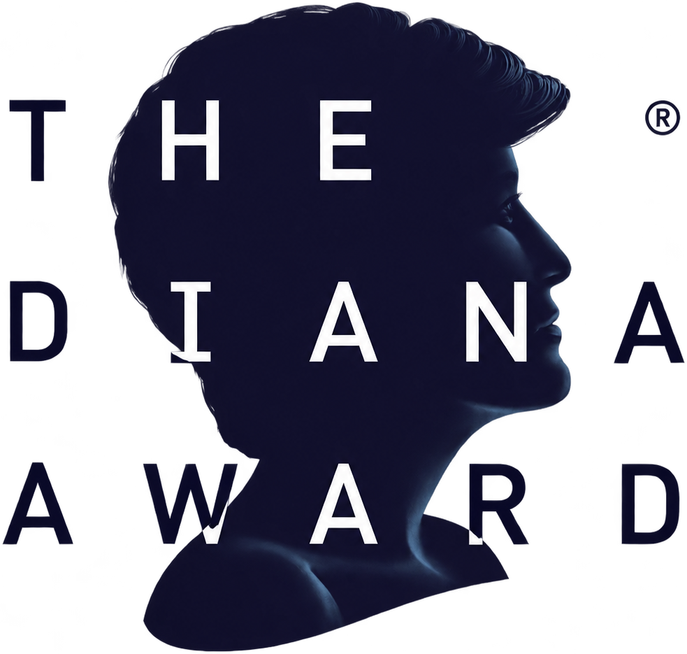
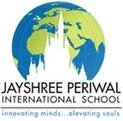
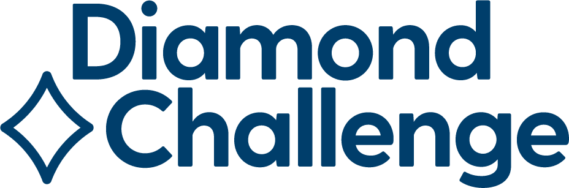
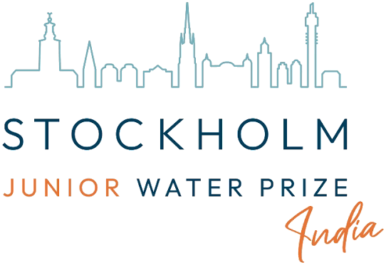
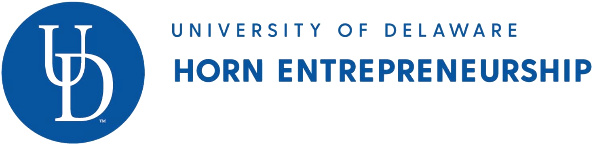
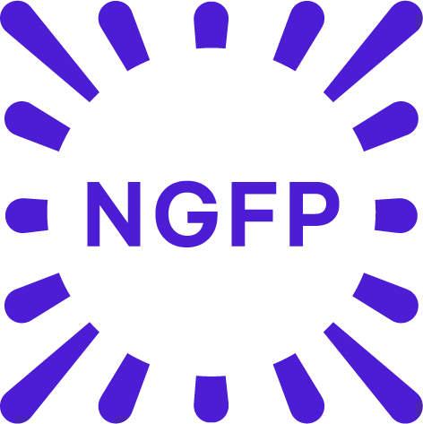
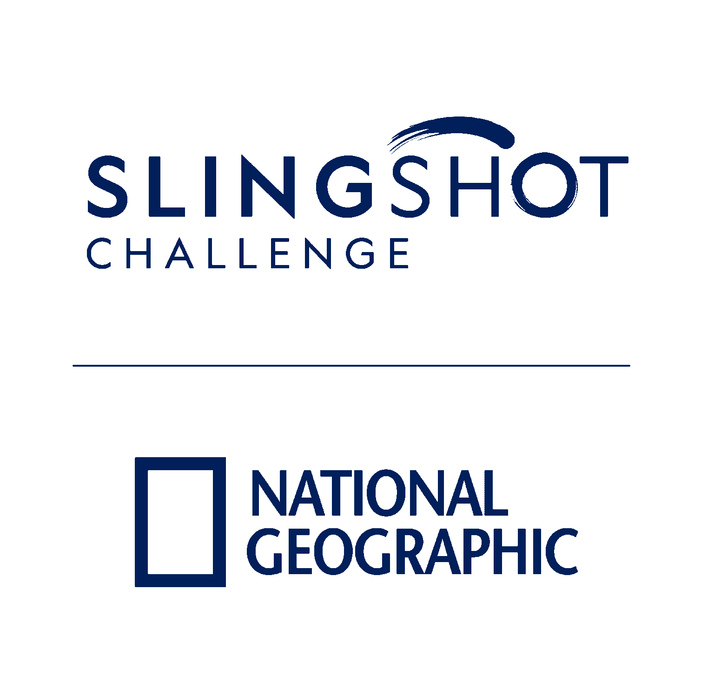
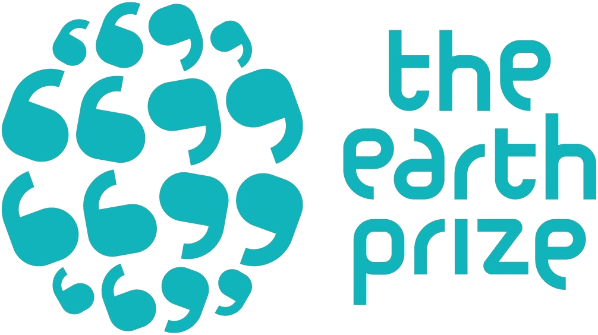

Hi, I'm Mrityunjay!
As a high school senior at Jayshree Periwal International School, Jaipur, I work on making healthcare and engineering tools more accessible and affordable for underserved communities through ambulance-routing software, clinical screening models, and fog-harvesting materials.
More about me
Honors & recognition
 Third Grand Award
Third Grand Award 2× Asia Finalist · Mathematics & Physics
2× Asia Finalist · Mathematics & Physics
2026 recipient Gold Medal · EcoFog
Gold Medal · EcoFog
Student of the Year
Final shortlist for Team India
National Water Champion Award
Emerging Innovator · Top 100 Global Honoree Top 100 · 35,000+ entries
Top 100 · 35,000+ entries
Honorable Mention · AERIS First-author research publication
First-author research publication
Honorable Mention · 2026 University of Rochester
University of Rochester
Youth Parliamentarian · 2026 Best in Country · 2024Top in the World · IGCSE Mathematics
Best in Country · 2024Top in the World · IGCSE Mathematics
Asia Runner-Up · EcoFogHere’s an ambulance-routing system I built to coordinate traffic signals.
Project detailsA green light helps at one junction, but the traffic ahead matters too. AmbuGo plans the ambulance’s route and signal changes together.
Here’s a human action reconstructed as a 3D hand movement.
Internship detailsThe person performs a task on the left, while the hand’s movement is reconstructed on the right. I developed these representations during my internship at Human Archive.
Upon receiving The Diana Award, I received letters from HRH Prince William, The Prince of Wales, and Prince Harry, Duke of Sussex, which you can read alongside my award certificate.